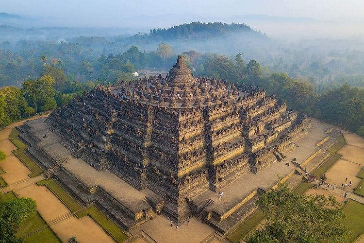
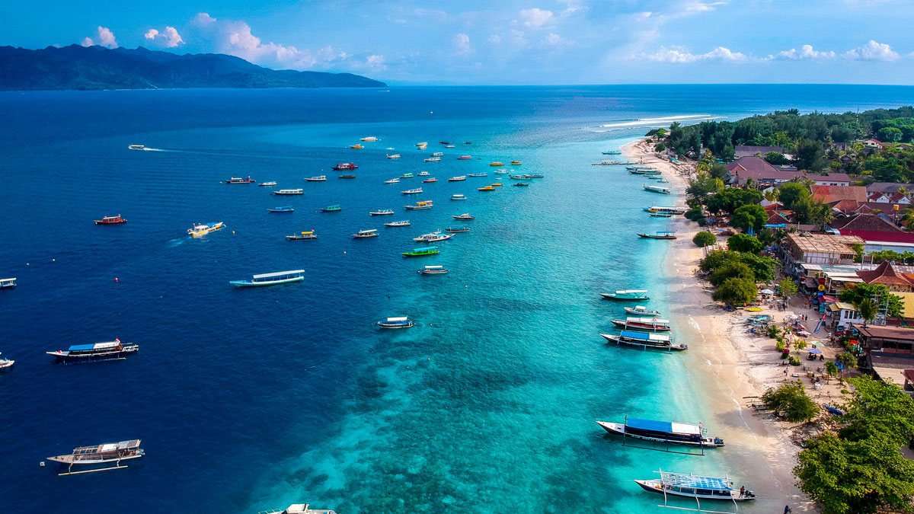
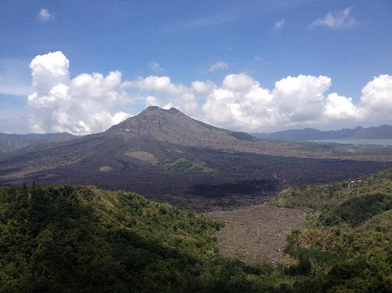

Indonesia
Indonesia (pengucapan bahasa Indonesia: [in.ˈdo.nɛ.sja]), dengan nama resmi Republik Indonesia (RI), atau lengkapnya Negara Kesatuan Republik Indonesia (NKRI), adalah sebuah negara kepulauan di Asia Tenggara yang dilintasi garis khatulistiwa dan berada di antara daratan benua Asia dan Oseania, sehingga Indonesia dikenal sebagai negara lintas benua, serta antara Samudra Pasifik dan Samudra Hindia.
Indonesia merupakan negara terluas ke-14 sekaligus negara kepulauan terbesar di dunia dengan luas wilayah sebesar 1.904.569 km²,[8] serta negara dengan pulau terbanyak ke-6 di dunia, dengan jumlah 17.504 pulau.[15] Nama alternatif yang umum dipakai untuk merujuk pada "Kepulauan Indonesia" disebut Nusantara.[16] Selain itu, Indonesia juga menjadi negara berpenduduk terbanyak ke-4 di dunia dengan populasi mencapai 270.203.917 jiwa pada tahun 2020,[17] serta negara beragama Islam terbanyak dan terbesar di dunia, dengan penganut lebih dari 230 juta jiwa.[18][19] Indonesia adalah salah satu negara multiras, multietnik, dan multikultural di dunia, seperti halnya Amerika Serikat.[20]
Indonesia berbatasan dengan sejumlah negara tetangga di Asia Tenggara, Benua Australia, dan Oseania. Indonesia berbatasan di wilayah darat dengan Malaysia di Pulau Kalimantan dan Sebatik, dengan Papua Nugini di Pulau Papua, dan dengan Timor Leste di Pulau Timor. Negara tetangga yang hanya berbatasan laut dengan Indonesia adalah Singapura, Filipina, Australia, dan wilayah persatuan Kepulauan Andaman dan Nikobar di India.
Indonesia adalah negara kesatuan dengan bentuk pemerintahan republik berdasarkan Konstitusi Indonesia yang sah, yaitu Undang-Undang Dasar Negara Republik Indonesia Tahun 1945 (UUD 1945).[21] Berdasarkan UUD 1945 pula, Dewan Perwakilan Rakyat (DPR), Dewan Perwakilan Daerah (DPD), dan Presiden dipilih secara langsung oleh rakyat.
objek wisata di indonesia

Candi borobudur
Candi Borobudur adalah sebuah candi Buddha yang terletak di Borobudur, Magelang, Jawa Tengah, Indonesia. Candi ini terletak kurang lebih 100 km di sebelah barat daya Semarang, 86 km di sebelah barat Surakarta, dan 40 km di sebelah barat laut Yogyakarta. Candi dengan banyak stupa ini didirikan oleh para penganut agama Buddha Mahayana sekitar tahun 800-an Masehi pada masa pemerintahan wangsa Syailendra. Borobudur adalah candi atau kuil Buddha terbesar di dunia, sekaligus salah satu monumen Buddha terbesar di dunia. Monumen ini terdiri atas enam teras berbentuk bujur sangkar yang di atasnya terdapat tiga pelataran melingkar, pada dindingnya dihiasi dengan 2.672 panel relief dan aslinya terdapat 504 arca Buddha. Borobudur memiliki koleksi relief Buddha terlengkap dan terbanyak di dunia. Stupa utama terbesar teletak di tengah sekaligus memahkotai bangunan ini, dikelilingi oleh tiga barisan melingkar 72 stupa berlubang yang di dalamnya terdapat arca Buddha tengah duduk bersila dalam posisi teratai sempurna dengan mudra Dharmachakra mudra.wikipedia

Kepulauan Gili
Kepulauan Gili atau Tiga Gili adalah kepulauan yang terdiri dari tiga pulau kecil atau pulau Gili kembar tiga — Gili Trawangan, Gili Meno, dan Gili Air — tepat di lepas pantai barat laut Lombok, Indonesia. Kepulauan ini merupakan destinasi wisata populer bagi wisatawan. Setiap pulau memiliki beberapa sanggraloka kecil, biasanya terdiri dari kumpulan pondok untuk wisatawan, kolam kecil, dan restoran. Sebagian besar penduduk lokal tinggal di Trawangan di kota yang membentang di sepanjang sisi timurnya di pedalaman. Lalu lintas mobil dan kendaraan bermotor dilarang di kepulauan ini oleh peraturan setempat, dengan demikian metode transportasi yang disukai adalah dengan berjalan kaki dan bersepeda atau kereta yang ditarik kuda yang disebut cidomo. Penyelaman skuba dan bebas di dan sekitar Kepulauan Gili juga populer karena berlimpahnya kehidupan laut dan formasi karang yang menarik. Tempat menyelam yang paling terkenal adalah titik Hiu, titik Manta, dan karang Simon.

Gunung Batur
Gunung Batur merupakan sebuah gunung berapi aktif di Kecamatan Kintamani, Kabupaten Bangli, Bali, Indonesia. Sisi tenggara dari kaldera yang berukuran 10×13 km ini sebagian besar berisi danau kaldera. Baik kaldera yang lebih besar, dan kaldera yang lebih kecil 7,5 km dibentuk oleh runtuhnya ruang magma gunung, keruntuhan lebih besar pertama terjadi sekitar 29.300 tahun yang lalu, dan kaldera bagian dalam runtuh kedua kalinya sekitar 20.150 tahun yang lalu. Perkiraan lain dari tanggal pembentukan kaldera bagian dalam, terbentuk selama letusan ignimbrit Bali, sekitar 23.670 dan 28.500 tahun yang lalu. Letusan pertama yang terdokumentasi adalah pada tahun 1804 dan yang terbaru adalah pada tahun 2000.